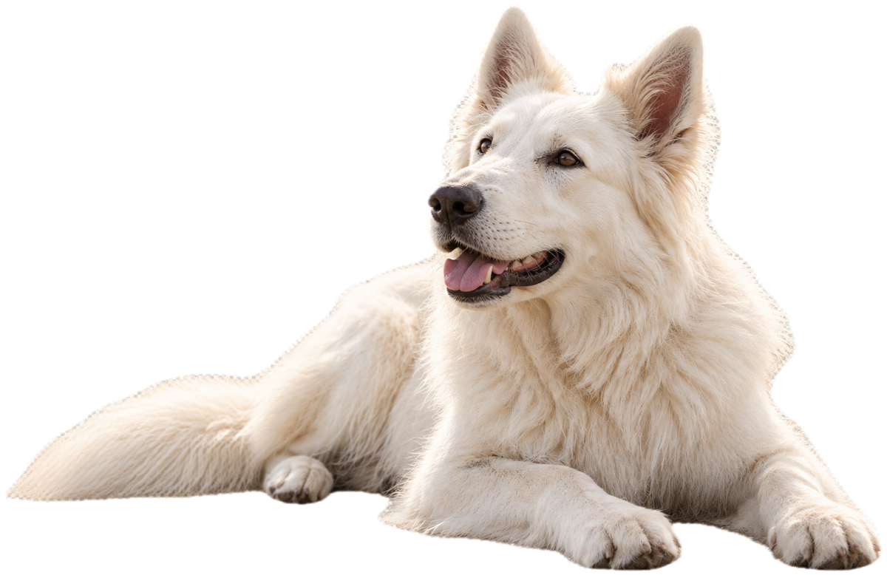
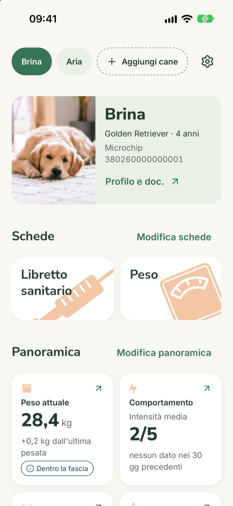

Salute
Vaccini, visite e farmaci sempre a portata di mano.
Salute, alimentazione, attività e molto altro. Olme ti aiuta a prenderti cura del tuo cane in modo semplice e organizzato.
In arrivo per iOS e Android


Funzionalità
Vaccini, visite e farmaci sempre a portata di mano.
Tieni traccia di tutti i suoi appuntamenti e scadenze.
Libretto, referti e documenti importanti, sempre a portata di mano.
Peso, alimentazione, attività, comportamento e allenamento.
Semplifica la routine
Promemoria, grafici e panoramiche chiare: tutto quello che riguarda il tuo cane, in ordine.
Scopri tutte le funzionalitàPerché Olme
Tutte le informazioni sempre a portata di mano.
Promemoria e scadenze sempre a portata di mano.
Prendersi cura di lui diventa più semplice, ogni giorno.
FAQ
Restano sul tuo telefono. Olme non ha account né server e non si collega a internet: i dati non vengono inviati a nessuno, nemmeno a chi ha creato l'app.
Sì, Olme è gratuita e non contiene pubblicità né acquisti.
Sì. Con «Esporta backup» crei un file con tutti i dati, le foto e i documenti, da salvare dove preferisci. Il file non è protetto da password: conservalo in un posto di cui ti fidi.
No. Olme non dà consigli veterinari e non sostituisce il passaporto, i certificati o l'iscrizione del cane all'anagrafe canina.
Olme arriverà presto su iOS e Android.
Scrivi a olmepet@gmail.com: rispondiamo appena possibile.
Presto su iOS e Android: inizia a costruire la sua storia, giorno dopo giorno.